El diagrama de clases
De todos los diagramas que define UML, el diagrama de clases es el que ocupa el lugar central en el diseño orientado a objetos. Representa las clases que serán utilizadas dentro del sistema y las relaciones que existen entre ellas, y se emplea durante las fases de análisis y de diseño de un proyecto. Es en ese momento cuando se empieza a crear el modelo conceptual de los datos que usará la aplicación: se identifican los componentes que tomarán parte en los procesos, con sus atributos y sus funcionalidades, y se definen las relaciones que habrá entre ellos.
Entender por qué este diagrama es tan importante resulta más fácil si se piensa en lo que ocurre cuando no existe. Sin un diagrama de clases, cada desarrollador del equipo se hace una idea distinta de qué información guarda el sistema y quién es responsable de cada operación; el resultado aparece semanas después, en forma de datos duplicados, métodos que hacen lo mismo con nombres diferentes y dependencias cruzadas que nadie se atreve a tocar. El diagrama de clases evita ese escenario porque obliga a decidir la estructura antes de escribirla, y deja la decisión por escrito en un formato que cualquiera puede leer y discutir.
Un diagrama de clases lleva vinculados una serie de conceptos que conviene tener presentes desde el principio:
- Clases: atributos, métodos u operaciones, y visibilidad.
- Relaciones: asociación, herencia, composición, agregación, realización y dependencia.
- Objetos: instanciación.
- Interfaces.
Todos ellos aparecen representados en la siguiente figura, que sirve de mapa de notación antes de entrar en detalle.
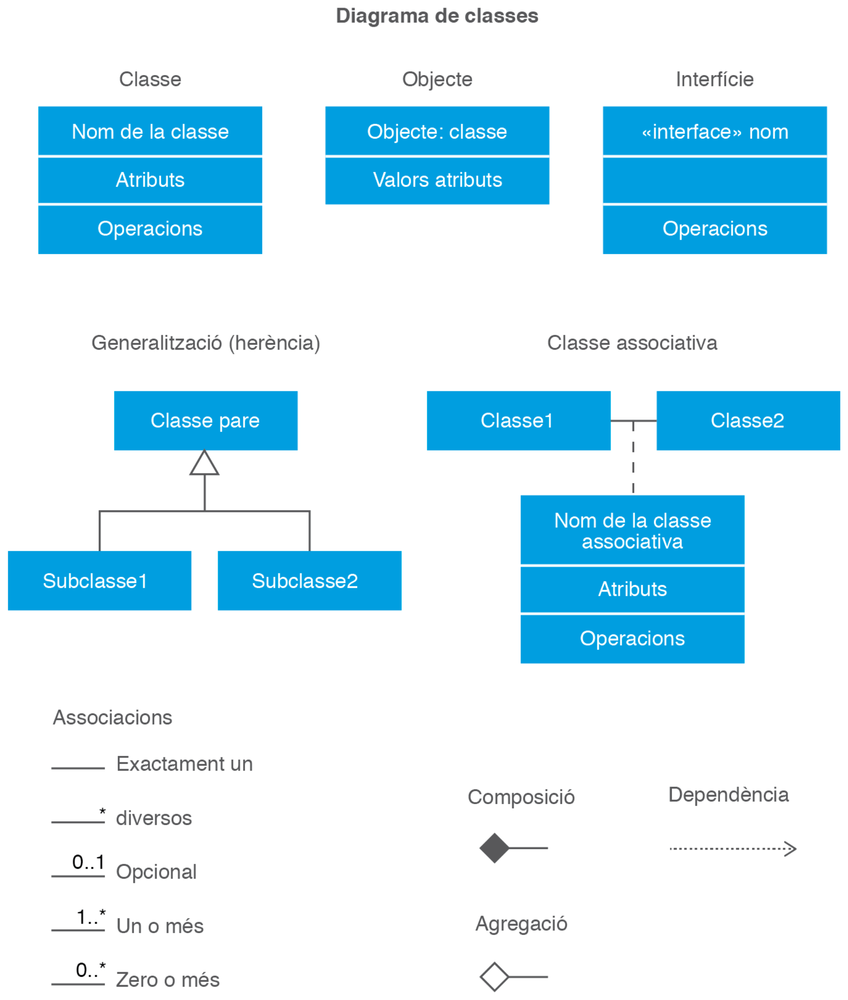
En la parte superior se ve la representación de una clase, de un objeto y de una interfaz. Debajo, la generalización o herencia junto a la clase asociativa, y en la parte inferior los distintos símbolos de asociación con sus cardinalidades. Esta lámina es la referencia rápida del apartado: cada elemento que aparece en ella se explica a continuación con su propio ejemplo.
Las clases: atributos y operaciones
Una clase describe un conjunto de objetos que comparten los mismos atributos y las mismas operaciones. Los atributos, también llamados propiedades o características, representan las características estables de la clase y son los datos detallados que contienen los objetos. Los valores concretos de esos atributos corresponden al objeto que instancia la clase, y es precisamente eso lo que hace que dos objetos de la misma clase sean diferentes entre sí.
Todo atributo tiene asignado un tipo y puede tener una lista formada por uno o más valores de ese tipo, de acuerdo con la multiplicidad correspondiente. Esos valores tienen que pertenecer al tipo declarado y pueden variar a lo largo del tiempo. Un atributo posible de la clase Persona sería el nombre, de tipo String; otro sería la fecha de nacimiento, de tipo Date.
Los métodos, también llamados operaciones o funcionalidades, implementan las acciones que se podrán llevar a cabo sobre los atributos. Ofrecen la posibilidad de aplicar cambios sobre ellos, pero también cubren muchas otras acciones relacionadas con el objeto, como abrirlo, cerrarlo o cargarlo. Cada método tiene una firma que describe los eventuales parámetros y su valor de retorno. Además, un método puede devolver excepciones durante su ejecución: una excepción es una instancia de una clase que es su tipo, y el hecho de que una operación devuelva una excepción normalmente indica que se ha producido una anomalía.
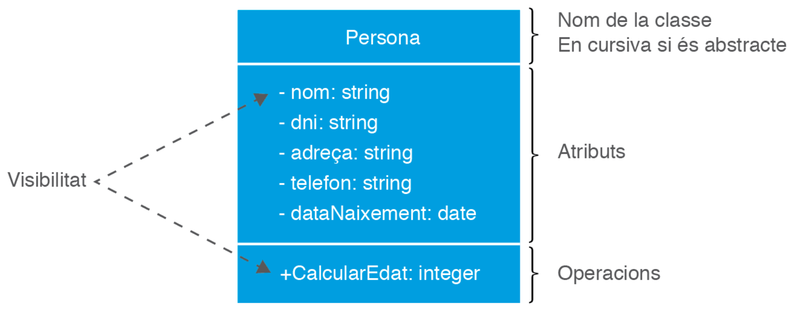
La representación gráfica de una clase es un rectángulo dividido en tres filas:
- En la primera se indica el nombre de la clase. Si el nombre aparece en cursiva, la clase es abstracta.
- En la segunda se indican los atributos que dan las características de la clase, con su visibilidad y con su tipo. Esta fila es opcional.
- En la tercera se indican los métodos u operaciones, con su declaración y su visibilidad. Esta fila también es opcional.
Volviendo a la figura, la clase Persona declara cinco atributos privados (nom, dni, adreca, telefon y dataNaixement) y una operación pública, calcularEdat(), que devuelve un entero. El código que se generaría a partir de este modelo podría ser el siguiente:
import java.util.Calendar;
import java.util.Date;
public class Persona {
// atributos
private String nom;
private String dni;
private String adreca;
private String telefon;
private Date dataNaixement;
// constructor
public Persona(String nom, String dni, String adreca, String telefon, Date dataNaixement) {
this.nom = nom;
this.dni = dni;
this.adreca = adreca;
this.telefon = telefon;
this.dataNaixement = dataNaixement;
}
// métodos u operaciones
public int calcularEdat() {
Calendar avui = Calendar.getInstance();
Calendar naixement = Calendar.getInstance();
naixement.setTime(dataNaixement);
int anys = avui.get(Calendar.YEAR) - naixement.get(Calendar.YEAR);
boolean encaraNoHaFetAnys = avui.get(Calendar.MONTH) < naixement.get(Calendar.MONTH)
|| (avui.get(Calendar.MONTH) == naixement.get(Calendar.MONTH)
&& avui.get(Calendar.DAY_OF_MONTH) < naixement.get(Calendar.DAY_OF_MONTH));
if (encaraNoHaFetAnys) {
anys = anys - 1;
}
return anys;
}
}
Merece la pena detenerse un momento en calcularEdat(), porque es un buen ejemplo de por qué conviene separar la representación externa de un dato de su valor real. La tentación inicial es guardar la fecha como texto y trocearla con split() para restar los años a mano. Ese camino funciona con una fecha concreta delante, pero se rompe en cuanto aparece otro formato, otro idioma o un separador distinto. Tratar la fecha como un Date y dejar que la clase Calendar se encargue de los meses y de los días hace que el método funcione con cualquier fecha válida, independientemente de cómo se muestre después por pantalla.
La visibilidad
La visibilidad de un atributo o de una operación define el ámbito desde el cual podrán ser utilizados esos elementos. Esta característica está directamente relacionada con el concepto de orientación a objetos llamado encapsulación, mediante el cual se permite a los objetos decidir cuál de su información será más o menos pública para el resto.
Las posibilidades de visibilidad, tanto para atributos como para métodos, son cuatro:
+en UML, o public, indica que el elemento es accesible por todos los demás elementos del sistema.-en UML, o private, indica que el elemento sólo es accesible por los elementos contenidos dentro del mismo objeto.#en UML, o protected, indica que el elemento sólo es visible para los elementos de su mismo objeto y para los elementos de objetos que son especializaciones suyas.~en UML, o package, sólo puede aplicarse cuando el objeto no es un paquete, y significa que el elemento sólo es visible para los elementos contenidos directa o indirectamente dentro del paquete que contiene el objeto.
La diferencia entre lo público y lo privado es la que marca el límite entre lo que un objeto promete y lo que guarda para sí. Poniendo un símil cotidiano: un coche ofrece un volante, unos pedales y una palanca de cambios, y todo eso es público; el mecanismo interno del cambio de marchas es privado, y el conductor no necesita saber cómo funciona. Gracias a esa frontera, el fabricante puede rediseñar la caja de cambios sin que el conductor tenga que aprender a conducir de nuevo.
Para verlo en acción, consideremos el código de la clase Habitacion, la clase Persona y la clase Test. Cada una tiene sus atributos y sus métodos, y algunos de esos elementos son públicos y otros privados.
public class Habitacion {
private String fechaEntrada;
private String fechaSalida;
private Persona cliente;
public Habitacion(String fechaEntrada, String fechaSalida, String nom) {
this.fechaEntrada = fechaEntrada;
this.fechaSalida = fechaSalida;
this.cliente = new Persona(nom);
}
public String getFechaEntrada() {
return fechaEntrada;
}
public String getFechaSalida() {
return fechaSalida;
}
public Persona getCliente() {
return cliente;
}
}
class Persona {
private String nom;
public Persona(String nom) {
this.nom = nom;
}
public String getNom() {
return nom;
}
public void setNom(String nom) {
this.nom = nom;
}
}
public class Test {
public static void main(String[] args) {
Habitacion reserva = new Habitacion("27/03/2019", "28/03/2019", "Luna Rosillo");
Persona cliente = reserva.getCliente();
String nom = reserva.getCliente().getNom();
System.out.println(nom);
}
}
Conviene fijarse en la línea del método main que llama a reserva.getCliente(). Desde la clase Test se tiene acceso únicamente a los atributos y a los métodos públicos de la clase Persona, de modo que se puede consultar el nombre de la persona a través del método público getNom(), pero no se puede leer el atributo privado nom directamente. El intento de escribir reserva.getCliente().nom no compila, y ese error de compilación es exactamente lo que la encapsulación busca: impedir que una clase ajena manipule el estado interno de un objeto sin pasar por los métodos que el propio objeto ha decidido ofrecer.
La otra cara de la moneda son los métodos getNom() y setNom() de la clase Persona. Al estar declarados dentro de la propia clase, sí tienen visibilidad sobre sus atributos privados, así que pueden leer y modificar nom sin ningún problema. Esa asimetría es la esencia de la encapsulación: dentro de casa se accede a todo, fuera sólo a lo que está en el escaparate.
Los objetos y la instanciación
Un objeto es una instanciación de una clase, y la instanciación es la acción de crear una instancia de esa clase. La palabra viene del inglés instance, y de ahí el término instancia que usamos en programación orientada a objetos.
Crear una instancia de una clase consiste en hacer una llamada al método constructor de esa clase en tiempo de ejecución. Un objeto se puede definir entonces como una unidad de memoria relacionada que, durante la ejecución, lleva a cabo acciones dentro del software. Es algo que se puede distinguir y que tiene una existencia propia, ya sea conceptual o física.
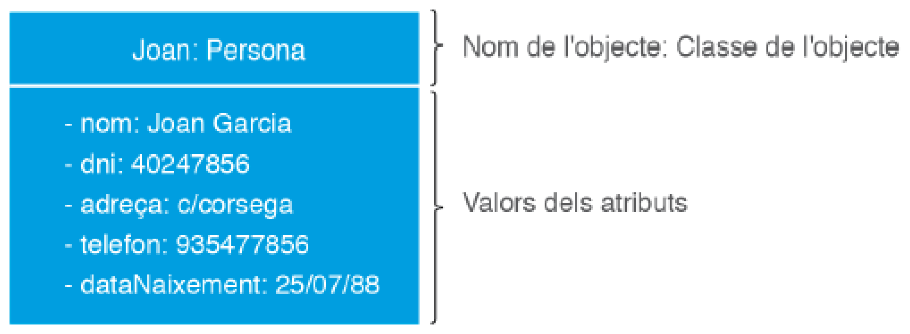
En la figura se representa el objeto Joan : Persona. La notación tiene dos partes separadas por dos puntos: a la izquierda el nombre del objeto concreto, y a la derecha el nombre de la clase a la que pertenece. En la fila de atributos aparecen ya los valores reales, no los tipos: nom vale Joan Garcia, dni vale 40247856 y así con el resto. La diferencia entre esta lámina y la de la clase Persona es la misma que existe entre el formulario en blanco de una ficha de cliente y la ficha de un cliente concreto ya rellenada.
El método para crear un objeto o instancia sería el siguiente:
public static void main(String[] args) {
Persona luna = new Persona("Luna Rosillo", "33242104O", "C/Constitución 130", "555223355", new Date());
}
La instrucción new es la que reserva memoria y ejecuta el constructor: a partir de ese momento existe un objeto independiente al que nos referimos con la variable luna. Un aspecto característico de los objetos es que tienen identidad, lo que significa que dos objetos creados por separado se consideran siempre diferentes aunque tengan exactamente los mismos valores en sus características estructurales. Si se crean dos objetos Persona con el mismo nombre y el mismo DNI, siguen siendo dos objetos distintos con dos direcciones de memoria distintas.
Existen, en cambio, clases cuyas instancias no tienen identidad. En esos casos, dos instancias con los mismos valores en las características estructurales se consideran la misma instancia, porque no representan entidades únicas sino valores. Es un matiz que se entiende mejor pensando en el dinero: dos billetes de veinte euros con el mismo número de serie serían el mismo billete, pero dos personas con el mismo nombre son dos personas.
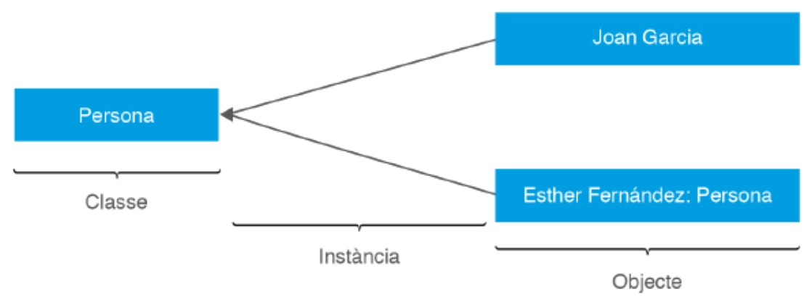
La figura anterior resume la relación entre los tres conceptos. La clase Persona funciona como molde, los identificadores Joan Garcia y Esther Fernández son instancias creadas a partir de ese molde, y cada una de esas instancias es un objeto con existencia propia. El esquema deja claro por qué decimos que una clase se escribe con mayúscula y se dibuja una sola vez, mientras que los objetos se crean tantas veces como haga falta en tiempo de ejecución.
Las relaciones
Las relaciones son elementos imprescindibles en un diagrama de clases. Por relación se entiende que un objeto obj1 pide a otro objeto obj2, mediante un mensaje, que ejecute una operación de las definidas en la clase de obj2. En el ejemplo del cliente que reserva una habitación de hotel intervienen dos clases, Habitacion y Persona, que están relacionadas porque la habitación consulta el nombre del cliente correspondiente.
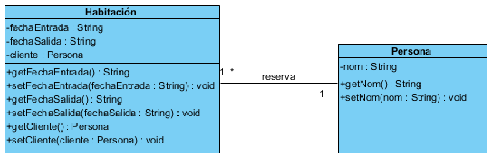
En el diagrama se aprecia la clase Habitacion, con sus atributos privados y sus métodos públicos, unida a la clase Persona por una línea. Sobre esa línea aparece el nombre de la asociación, reserva, y en sus extremos la multiplicidad. La lectura correcta de la línea es la siguiente: un cliente puede reservar muchas habitaciones a lo largo del tiempo, pero cada habitación concreta pertenece a un único cliente.
Las relaciones que existen entre las diferentes clases se denominan de forma genérica asociaciones. Una asociación es un clasificador que define una relación entre varias clases y que establece conexiones con un cierto significado entre las instancias respectivas. Una asociación tiene varios extremos de asociación, y en cada uno de ellos hay un clasificador que juega un papel determinado. Un mismo clasificador puede aparecer en más de un extremo de la misma asociación desempeñando papeles diferentes. Cuando una asociación tiene dos extremos se llama binaria, que es el caso del cliente que reserva una habitación, y cuando tiene tres se denomina ternaria.
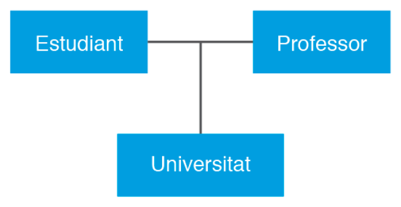
En la asociación ternaria de la figura, la relación no se establece entre dos clases sino entre tres a la vez: un estudiante y un profesor se relacionan en el marco de una universidad. Este tipo de relación aparece siempre que el vínculo sólo tiene sentido cuando concurren los tres participantes, y no se puede descomponer en tres asociaciones binarias sin perder información.
La multiplicidad, representada con valores del estilo <mín...máx>, indica el número máximo de enlaces posibles que se podrán dar en una relación. Esa multiplicidad nunca puede ser negativa y, además, el valor máximo es siempre mayor o igual que el valor mínimo.
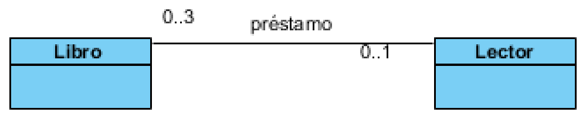
En la figura se ve la asociación préstamo entre las clases Libro y Lector. La lectura del diagrama es que, en esa asociación, para cada objeto de la clase Lector puede haber como mínimo 0 objetos de la clase Libro y como máximo 3. A la inversa, para cada objeto de la clase Libro puede haber como mínimo 0 y como máximo 1 objeto de la clase Lector. Los valores de la multiplicidad se colocan siempre junto al extremo opuesto al que se está leyendo, detalle que provoca muchos errores de interpretación al principio.
Para expresar las multiplicidades mínimas y máximas se utiliza la siguiente notación:
| Notación | Cardinalidad / multiplicidad |
|---|---|
0..1 |
Cero o una vez |
1 |
Una y sólo una vez |
* |
De cero a varias veces |
1..* |
De una a varias veces |
M..N |
Entre M y N veces |
N |
N veces |
Una clase puede asociarse consigo misma creando una asociación reflexiva, similar a las relaciones reflexivas del modelo Entidad/Relación. Estas relaciones unen entre sí instancias de una misma clase y son más frecuentes de lo que parece: un empleado que es jefe de otros empleados, una carpeta que contiene otras carpetas o una persona que tiene amigos son todos casos del mismo patrón.
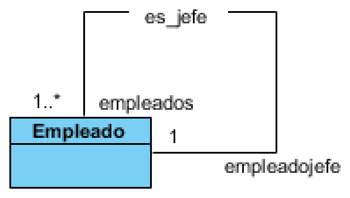
En el ejemplo, la clase Empleado se relaciona consigo misma con dos papeles distintos: un empleado puede ser empleadojefe de muchos otros (1..*) y, a la vez, todo empleado tiene un jefe o ninguno (1). La asociación reflexiva obliga además a etiquetar los dos extremos, porque si no el diagrama sería ambiguo: no se sabría cuál de los dos roles corresponde a cada lado.
Se pueden encontrar diferentes tipos de relaciones entre clases, clasificables de muchas maneras. La siguiente lista recoge las más habituales y sirve de índice para lo que viene a continuación:
- Relación de asociación.
- Relación de asociación de agregación.
- Relación de asociación de composición.
- Relaciones de dependencia.
- Relación de generalización.
La relación de asociación
La relación de asociación se representa mediante una línea continua sin flechas ni ningún otro símbolo en los extremos. Es el tipo de relación que se ha estado explicando hasta este momento, y es también la más común de todas. Se trata de una relación estructural que define las conexiones entre dos o más objetos, lo que permite asociar objetos que instancian clases que colaboran entre sí.
Esa línea admite, además, un símbolo opcional que conviene conocer: la navegabilidad. Cuando el diseñador quiere dejar escrito que la asociación se recorre en un solo sentido, añade una punta de flecha abierta en el extremo hacia el que se puede navegar. Una asociación dibujada sin flechas es navegable en los dos sentidos; una asociación con flecha en un solo extremo sólo permite ir en esa dirección.
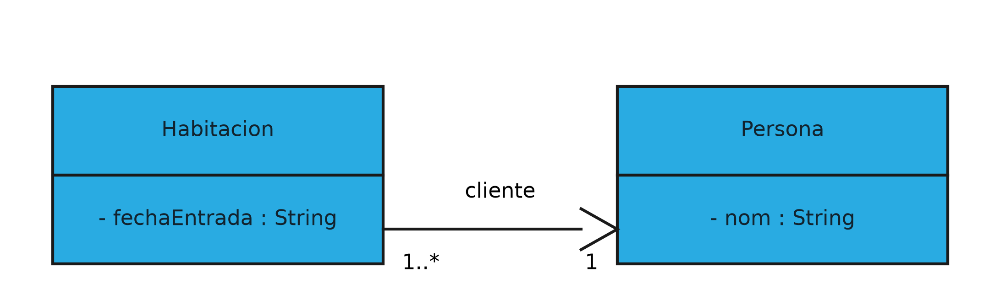
La figura muestra la misma asociación entre Habitacion y Persona que ya conocemos, pero con la flecha de navegabilidad señalando a Persona. La lectura es que desde una habitación se puede llegar a su cliente, y que no existe el camino inverso por defecto. El símbolo no es decorativo, porque se traduce directamente en el código: en una asociación navegable en un solo sentido, sólo la clase del extremo de origen guarda un atributo del tipo de la clase destino, mientras que la clase destino no sabe nada de la primera. En una asociación bidireccional, en cambio, las dos clases guardan una referencia a la otra, y mantener esas dos referencias sincronizadas pasa a ser responsabilidad de quien programe.
Esa es la razón práctica por la que conviene decidir la navegabilidad con intención y no por costumbre. Si desde Persona nunca hace falta llegar a sus habitaciones, dejar la asociación sin flechas obliga a Persona a cargar con una lista que no usa, y abre la puerta a que las dos listas se desincronicen cuando alguien añada o borre una reserva por un solo lado. Si en algún momento hiciera falta recorrer el camino contrario, siempre es posible añadir un método que consulte a la base de datos en lugar de duplicar la estructura.
Conviene no confundir esta relación con la de dependencia, que veremos más adelante. La asociación es un vínculo estable: los objetos asociados se conocen y pueden intercambiar mensajes a lo largo de toda su vida. La dependencia, en cambio, es un vínculo puntual y mucho más débil.
La relación de agregación
Una relación de asociación de agregación es un caso especial de asociación entre dos o más objetos. Se trata de una relación del tipo todo-parte, e implica dos tipos de objetos: el objeto denominado base y el objeto que estará incluido en él. La relación indica que el objeto base necesita del objeto incluido para poder existir y hacer sus funcionalidades. La clave está en qué ocurre cuando desaparece el objeto base: los objetos incluidos no desaparecen y pueden continuar existiendo con sus funcionalidades propias.
La agregación se representa mediante una línea continua que finaliza en uno de sus extremos con un rombo vacío, sin rellenar. El rombo se coloca siempre del lado del objeto base.
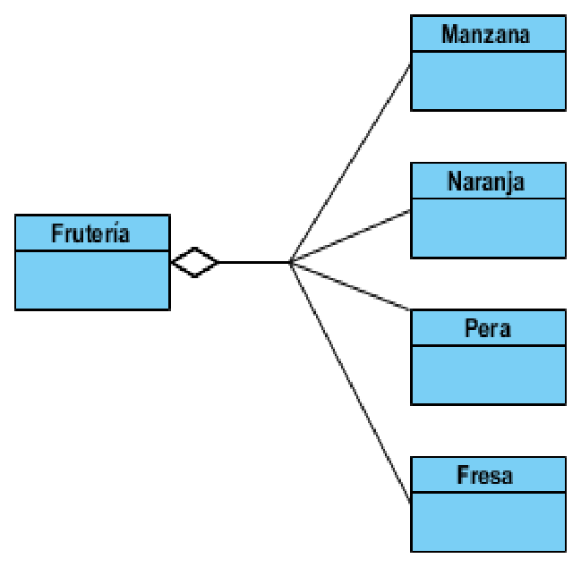
En la figura, el objeto base es la Frutería y los objetos incluidos son Manzana, Naranja, Pera y Fresa. Se establece una relación todo-parte en la que las frutas forman parte de la frutería. El ejemplo deja claro el matiz importante: si la frutería deja de existir, las frutas continúan existiendo como entidades con sentido propio.
Un segundo ejemplo ayuda a fijar la notación con multiplicidad.
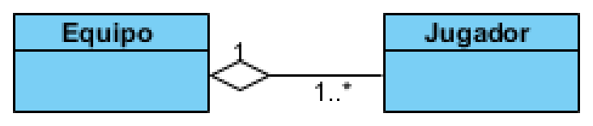
Aquí un Equipo agrega a sus jugadores con multiplicidad 1..*, lo que significa que un equipo tiene uno o más jugadores, mientras que cada jugador puede quedar sin equipo asignado. La frase que resume la agregación en lenguaje natural es "forma parte de, pero puede vivir sin ello".
La relación de composición
Una relación de asociación de composición es también un caso especial de asociación y también una relación del tipo todo-parte. Se parece mucho a la agregación, con una diferencia fundamental: existe una dependencia de existencia entre el objeto base y los objetos incluidos. Si deja de existir el objeto base, dejarán de existir también los objetos incluidos; el tiempo de vida del objeto incluido depende por completo del tiempo de vida del objeto base.
La composición se representa mediante una línea continua finalizada en uno de sus extremos por un rombo pintado, relleno. Igual que en la agregación, el rombo se sitúa del lado del objeto base.
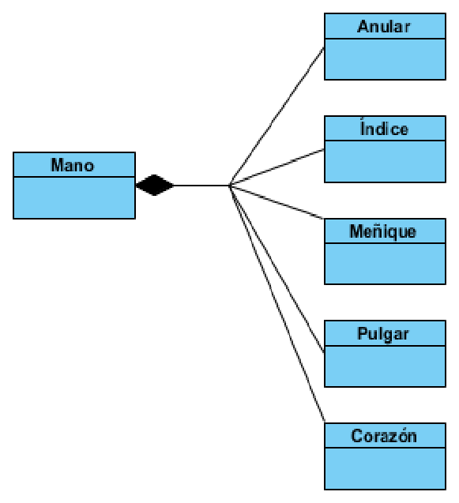
En el ejemplo, el objeto base Mano se compone de los objetos incluidos Meñique, Anular, Corazón, Índice y Pulgar. Sin la mano, el resto de objetos deja de existir: un dedo separado del cuerpo no es un dedo, es tejido. Esa es la diferencia esencial frente a la frutería, donde las frutas siguen siendo frutas cuando la tienda cierra.
La siguiente tabla resume las diferencias entre la agregación y la composición:
| Criterio | Agregación | Composición |
|---|---|---|
| Varias asociaciones comparten los componentes | Sí | No |
| Destrucción de los componentes al destruir el compuesto | No | Sí |
| Cardinalidad del compuesto | Cualquiera | 0..1 o 1 |
Otro ejemplo de composición puede verse en el montaje de un ordenador.
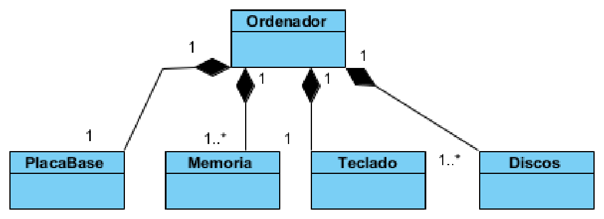
La clase Ordenador se compone de PlacaBase, Memoria, Teclado y Discos. Cada uno de esos elementos se integra en el conjunto con su propia multiplicidad: hay una placa base, puede haber varios módulos de memoria, un teclado y uno o más discos. Si el ordenador se desmonta definitivamente, esas piezas pierden su función como partes y la relación desaparece con él.
Elegir entre agregación y composición no es un detalle estético, porque la decisión tiene consecuencias directas en el código. En una composición, el objeto base crea y destruye sus partes, y por tanto es el único responsable de su ciclo de vida; en una agregación, las partes llegan al objeto base ya creadas y siguen existiendo fuera de él. Si se modela como composición algo que en realidad es una agregación, se acaba destruyendo información que debía sobrevivir, y al contrario, si se modela como agregación algo que era una composición, quedan objetos huérfanos ocupando memoria.
La relación de dependencia
La relación de dependencia se representa mediante una flecha discontinua entre dos elementos. El objeto del cual sale la flecha se considera un objeto dependiente, y el objeto al cual llega la flecha se considera un objeto independiente. Se trata de una relación semántica: si hay un cambio en el objeto independiente, el objeto dependiente se verá afectado.
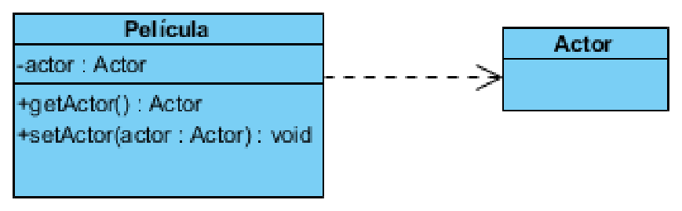
En el ejemplo, el elemento Actor es independiente y existe una dependencia normal de Pelicula respecto a él, puesto que el actor se usa como parámetro en los métodos setActor() y getActor() de la película. Si cambia la clase Actor, la clase Pelicula se verá afectada y probablemente habrá que recompilarla. La dependencia es, por tanto, la relación más débil de todas: no hay un atributo que guarde al otro objeto, sólo un uso puntual.
Otros ejemplos de relación de dependencia serían la clase Impresora respecto a una clase Documento, ya que la impresora necesita el documento para imprimirlo, o la relación entre un Viajero y su Equipaje, puesto que el viajero necesita su equipaje para viajar.
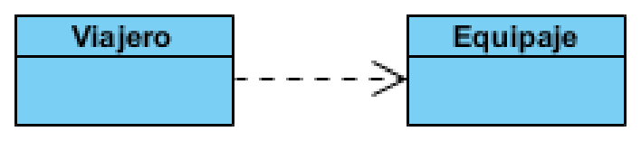
La utilidad práctica de detectar dependencias está en la dirección de las flechas. Si al dibujar el diagrama aparecen flechas que van y vienen entre dos clases, esas dos clases están tan acopladas que en realidad deberían ser una sola o deberían comunicarse a través de una tercera pieza. Un diagrama lleno de dependencias cruzadas es la señal de alarma más fiable de un diseño frágil.
La relación de generalización
La relación de generalización se da entre dos clases cuando existe un vínculo que se puede considerar de herencia. Una de las clases se denomina clase madre o superclase, y la otra u otras se denominan clases hijas o subclases, que heredan los atributos y los métodos de la clase madre. La relación se especifica mediante una flecha con la punta triangular vacía que sale de la clase hija y acaba en la clase madre.
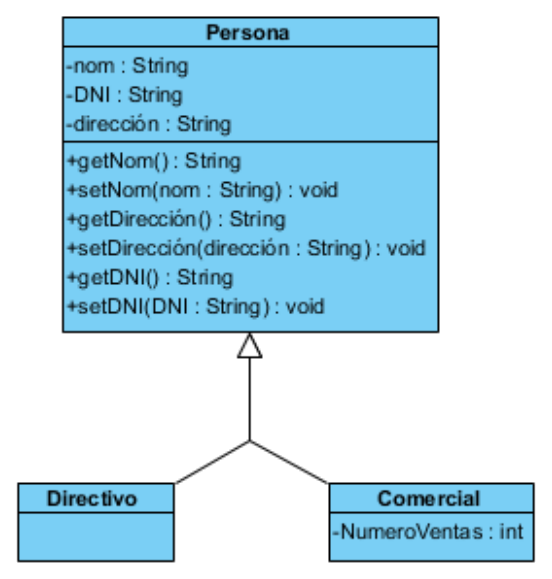
En la figura, Directivo y Comercial heredan de Persona. La clase madre concentra lo que todas las personas tienen en común (nom, dni, dirección y sus métodos de acceso), y cada subclase añade lo que le es propio; en el caso de Comercial, un atributo NumeroVentas. La herencia ofrece como punto fuerte la posibilidad de reutilizar parte del contenido de una clase, extendiendo sus atributos y sus métodos a las clases hijas, porque lo que se cambia en la madre se refleja automáticamente en todas ellas.
Esa ventaja tiene una contrapartida que conviene conocer: la herencia crea el acoplamiento más fuerte que existe en orientación a objetos. Un cambio en la clase madre repercute en todas las hijas, incluso en las que no lo necesitaban, así que conviene reservarla para relaciones de especialización genuinas. Si la frase "un X es un Y" no se cumple, la herencia es la herramienta equivocada.
La clase asociativa
Cuando una asociación tiene propiedades o métodos propios, se representa como una clase asociativa, unida a la línea de la asociación por medio de una línea discontinua. Tanto la línea como el rectángulo de clase representan el mismo elemento conceptual: la asociación. Es decir, el dato no pertenece a ninguna de las dos clases que se relacionan, sino al vínculo que se establece entre ellas.
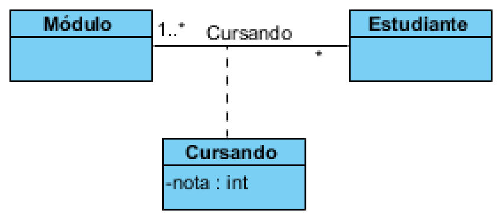
En el ejemplo, la nota está directamente relacionada con las clases Módulo y Estudiante. Cada alumno de la asignatura tendrá una determinada nota, y la nota no tiene sentido ni guardada en el estudiante (porque depende de la asignatura) ni guardada en la asignatura (porque depende del estudiante). La única forma de modelar correctamente esta situación en UML es con una clase asociativa, que convierte esa tercera dimensión en un elemento de primera clase con su propio atributo nota : int.
Si en lugar de una clase asociativa se colocara el atributo en una de las dos clases, el modelo arrastraría un error difícil de corregir: el estudiante tendría que guardar una lista de notas paralela a su lista de módulos, y mantener las dos listas sincronizadas sería responsabilidad de quien programe, no del modelo.
La interfaz
Una interfaz contiene la declaración de las operaciones sin su implementación, que tendrán que ser implementadas por una clase o un componente. Llegados a este punto conviene responder a una pregunta habitual: ¿qué diferencia hay entre una interfaz y una clase abstracta? Una interfaz es simplemente una lista de métodos no implementados, no tiene atributos, pero puede contener la declaración de posibles constantes. Una clase abstracta, a diferencia de las interfaces, puede incluir tanto métodos implementados como no implementados.
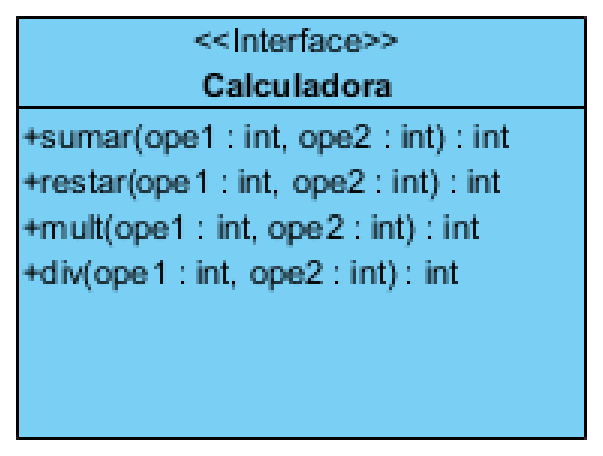
La figura muestra la interfaz Calculadora, que declara los métodos sumar, restar, mult y div. La notación incluye el estereotipo «interface» en la primera fila y deja la fila de atributos vacía, porque una interfaz no guarda estado. El código que definiría esa interfaz podría ser el siguiente:
interface Calculadora {
int suma(int ope1, int ope2);
int resta(int ope1, int ope2);
int multiplicacio(int ope1, int ope2);
int divisio(int ope1, int ope2);
}
No hace falta escribir los modificadores public abstract en cada método: dentro de una interfaz todas las operaciones son implícitamente públicas y abstractas, y añadirlos a mano sólo genera ruido. Una vez definida la interfaz, se puede ver cómo se utiliza en el código siguiente:
public class CalculadoraSimple implements Calculadora {
@Override
public int suma(int ope1, int ope2) {
return ope1 + ope2;
}
@Override
public int resta(int ope1, int ope2) {
return ope1 - ope2;
}
@Override
public int multiplicacio(int ope1, int ope2) {
return ope1 * ope2;
}
@Override
public int divisio(int ope1, int ope2) {
return ope1 / ope2;
}
}
La palabra implements es la que establece el contrato: la clase CalculadoraSimple se compromete a ofrecer todos los métodos que declara Calculadora. Si se olvidara alguno, el compilador daría error inmediatamente. La anotación @Override no es obligatoria, pero es muy recomendable, porque le indica al compilador que ese método pretende sobrescribir el de la interfaz y hace que un error de escritura en el nombre se detecte en compilación en lugar de pasar desapercibido.
La ventaja de programar contra interfaces y no contra clases concretas se aprecia en cuanto el sistema crece. Si mañana hiciera falta una calculadora científica o una calculadora que trabaje con decimales, bastaría con crear otra clase que implemente Calculadora; el resto del programa, que sólo conoce la interfaz, seguiría funcionando sin cambios. Es el mismo principio del puerto USB aplicado a las clases.
La relación de realización
Ese implements del código tiene su propio símbolo en el diagrama, y es la relación de realización. Se dibuja con una línea discontinua terminada en un triángulo hueco, idéntica a la generalización salvo por el trazo, y la punta apunta siempre a la interfaz.
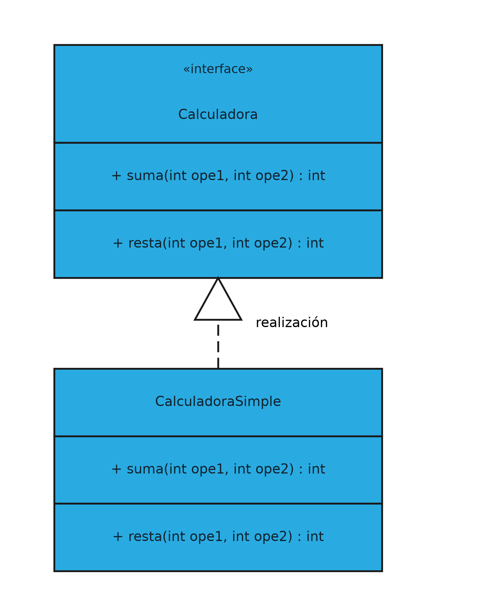
En la figura, CalculadoraSimple realiza la interfaz Calculadora: la línea sale de la clase, va en trazo discontinuo y acaba en el triángulo hueco que toca la interfaz. La diferencia con la generalización es sólo gráfica en apariencia, pero conceptualmente son dos cosas distintas. La generalización expresa identidad, y por eso se lee como "es un": un Comercial es una Persona. La realización expresa obligación, y se lee como "cumple el contrato de": CalculadoraSimple no es una Calculadora, sino que se compromete a ofrecer las operaciones que la interfaz declara.
Esa distinción tiene una consecuencia directa en el modelo. Mientras que una clase sólo puede heredar de una única clase madre en lenguajes como Java, puede realizar tantas interfaces como necesite: una clase puede ser Comparable, Serializable y Calculadora a la vez, porque cumplir varios contratos no plantea ningún conflicto. Por eso, cuando en un diagrama aparecen muchas flechas de realización apuntando a una misma interfaz, lo que se está describiendo no es una jerarquía de tipos, sino un conjunto de piezas intercambiables.
El polimorfismo
La realización y la generalización preparan el terreno para el concepto que da sentido a todo lo anterior: el polimorfismo. Polimorfismo significa, literalmente, "muchas formas", y describe la capacidad de invocar una misma operación sobre objetos de clases distintas obteniendo en cada caso el comportamiento que corresponde al objeto real.
El mecanismo que lo hace posible está en la firma compartida. Cuando Factura declara calculoImporte() como abstracta y cada clase hija la implementa a su manera, todas las hijas ofrecen una operación con el mismo nombre, los mismos parámetros y el mismo tipo de retorno. Gracias a esa coincidencia, el código que calcula el total de un lote de facturas puede limitarse a recorrer la colección y llamar a calculoImporte() en cada elemento, sin preguntar de qué tipo es cada uno:
List<Factura> facturas = cargarFacturasDelMes();
double total = 0;
for (Factura factura : facturas) {
total += factura.calculoImporte();
}
Ese bucle no contiene ni una sola condición. La decisión de qué implementación ejecutar no la toma el programador al escribir el bucle, sino la máquina virtual en tiempo de ejecución, mirando el tipo real del objeto al que apunta la variable. A ese mecanismo se le llama enlace dinámico, y es exactamente lo que hace que el diseño orientado a objetos resista bien los cambios: si mañana aparece un tercer tipo de factura, basta con crear la clase y heredar de Factura; el bucle anterior sigue siendo correcto sin tocar una línea.
La alternativa a este mecanismo, y el motivo por el que conviene tenerlo presente, es la cadena de condiciones. Sin polimorfismo, el total se calcularía con algo parecido a if (factura.getTipo().equals("servicios")) { ... } else if (factura.getTipo().equals("productos")) { ... }, y esa estructura habría que ampliarla en cada lugar del programa donde se use el importe. Cada tipo nuevo obligaría a revisar todos esos puntos y a acordarse de todos ellos, que es precisamente la clase de tarea que nadie recuerda hacer bien.
El diagrama de objetos
Un objeto es una instancia de una clase, así que el diagrama de objetos se puede considerar una instancia del diagrama de clases. Sólo puede contener instancias y relaciones entre objetos, es decir, enlaces y dependencias que tengan lugar entre instancias, y los clasificadores y asociaciones que aparezcan en él tienen que haber sido definidos previamente en un diagrama de clases.
A menudo cumple la función de simple ejemplo de un diagrama de clases o de una parte de él, y ahí está su valor: sirve para comprobar que el modelo funciona con datos reales. En las dos figuras siguientes se muestra primero un diagrama de clases con dos clases, Habitacion y Persona, y después el diagrama de objetos que se deriva de él.
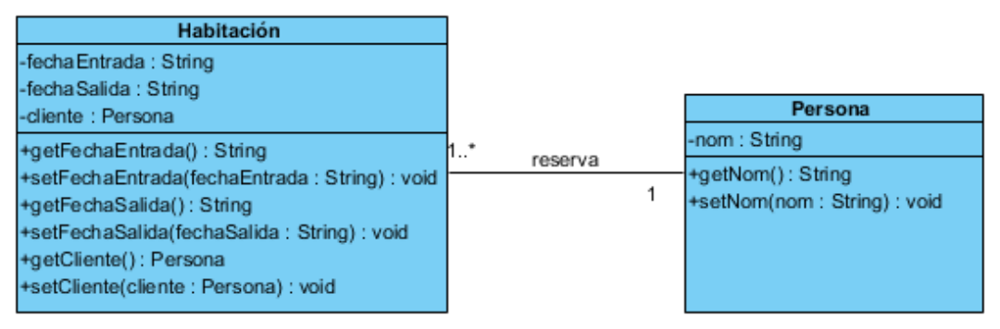
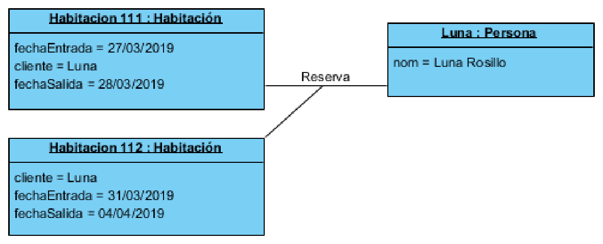
La comparación entre ambas láminas explica el concepto mejor que cualquier definición. En el diagrama de clases aparece la clase Habitacion con un atributo cliente de tipo Persona y una multiplicidad 1..*; en el diagrama de objetos aparecen dos habitaciones concretas, Habitacion111 : Habitacion y Habitacion112 : Habitacion, con sus fechas reales, y una única Luna : Persona que reserva las dos. Lo que en el modelo era "de uno a muchos" se convierte en la práctica en un objeto que apunta a otros dos, y cualquier duda sobre si el modelo era correcto se resuelve mirando el ejemplo con datos.
Con esto queda recorrido el diagrama de clases completo: sus clases y atributos, los cuatro niveles de visibilidad, la creación de objetos, los cinco tipos de relación con sus símbolos y multiplicidades, la clase asociativa y la interfaz. El siguiente paso lógico es llevarlo a una herramienta real, que es lo que haremos en el apartado siguiente construyendo el diagrama de un sistema de facturación desde cero.